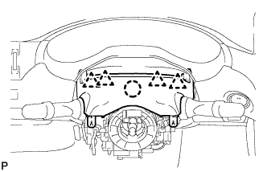
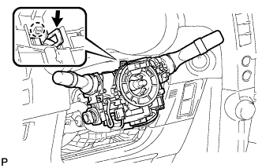
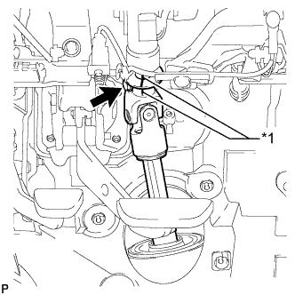
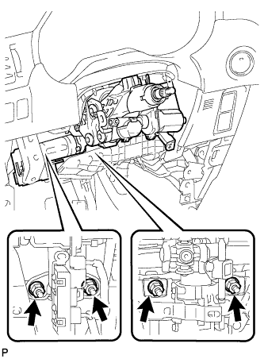
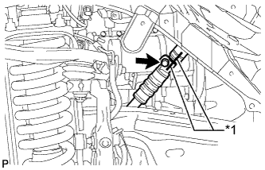
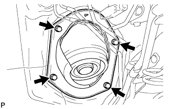
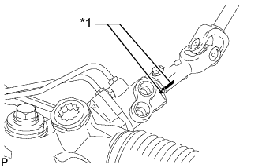

STEERING COLUMN ASSEMBLY > REMOVAL |
| 1. PLACE FRONT WHEELS FACING STRAIGHT AHEAD |
| 2. DISCONNECT CABLE FROM NEGATIVE BATTERY TERMINAL |
Disable the auto tilt away function by changing the customize parameter (Click here).
Turn the engine switch on (IG). Operate the tilt and telescopic switch to fully extend and lower the steering column assembly.
Turn the engine switch off and disconnect the cable from the negative (-) battery terminal.
| 3. REMOVE FRONT WHEEL LH |
| 4. REMOVE STEERING WHEEL ASSEMBLY |
Remove the steering wheel assembly (Click here).
| 5. REMOVE STEERING COLUMN LOWER COVER |
 |
Remove the 3 screws.
Detach the 2 claws and remove the steering column lower cover.
| 6. REMOVE STEERING COLUMN UPPER COVER |
|  |
Detach the 4 clips.
Detach the claw and remove the steering column upper cover.
| 7. REMOVE COMBINATION SWITCH ASSEMBLY WITH SPIRAL CABLE SUB-ASSEMBLY |
Disconnect the connectors from the combination switch with spiral cable.
|  |
Use pliers to hold the clamp and raise the claw with a screwdriver. Then remove the combination switch switch assembly with spiral cable sub-assembly from the steering column assembly.
| 8. REMOVE NO. 1 INSTRUMENT LOWER PANEL AIRBAG ASSEMBLY |
Remove the instrument lower panel airbag assembly (Click here).
| 9. REMOVE STEERING COLUMN ASSEMBLY |
Detach the claws and remove the wire harness protector and wire harness.
|  |
Put matchmarks on the steering actuator and steering column.
| *1 | Matchmark |
Remove the bolt.
|  |
Remove the 4 nuts, steering column and steering shaft stopper.
| 10. REMOVE FRONT NO. 1 FENDER APRON TO FRAME SEAL LH |
Remove the 5 clips and front No. 1 fender apron to frame seal LH.
| 11. DISCONNECT STEERING INTERMEDIATE SHAFT ASSEMBLY |
|  |
Put matchmarks on the steering intermediate shaft and No. 2 steering intermediate shaft.
| *1 | Matchmark |
| 12. REMOVE NO. 1 STEERING COLUMN HOLE COVER SUB-ASSEMBLY |
|  |
Remove the 4 bolts and steering column hole cover from the vehicle.
| 13. DISCONNECT NO. 2 STEERING INTERMEDIATE SHAFT SUB-ASSEMBLY |
|  |
Put matchmarks on the No. 2 steering intermediate shaft and power steering gear.
| *1 | Matchmark |
Remove the bolt and No. 2 steering intermediate shaft from the power steering gear.